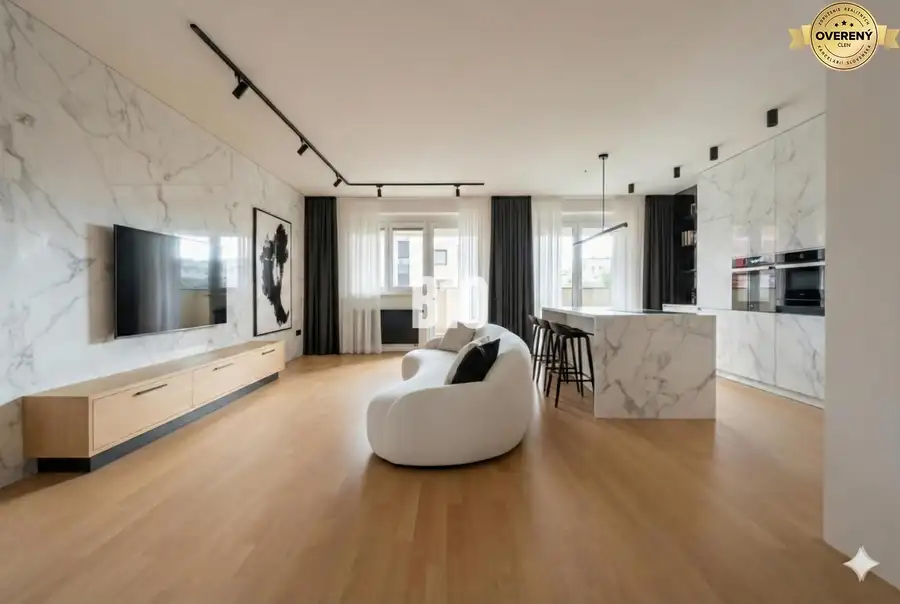
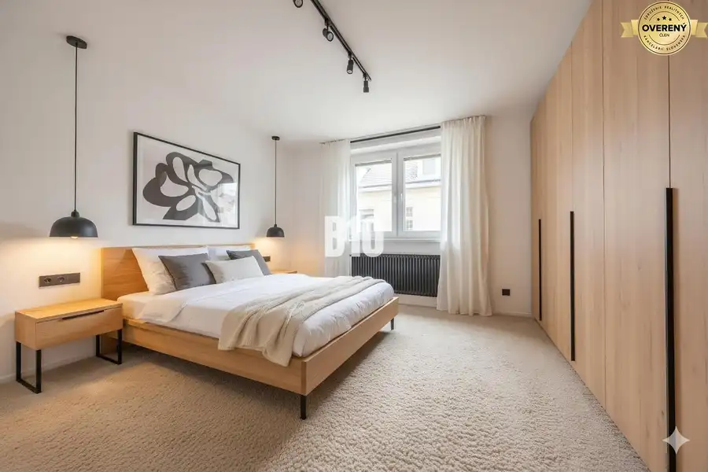
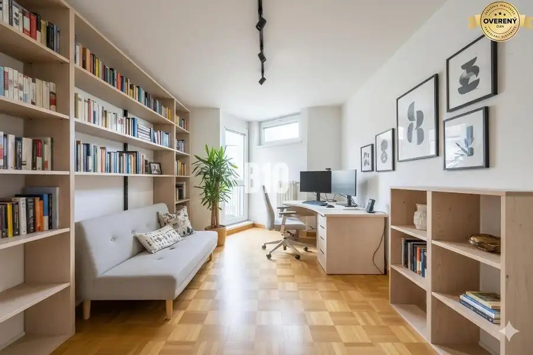
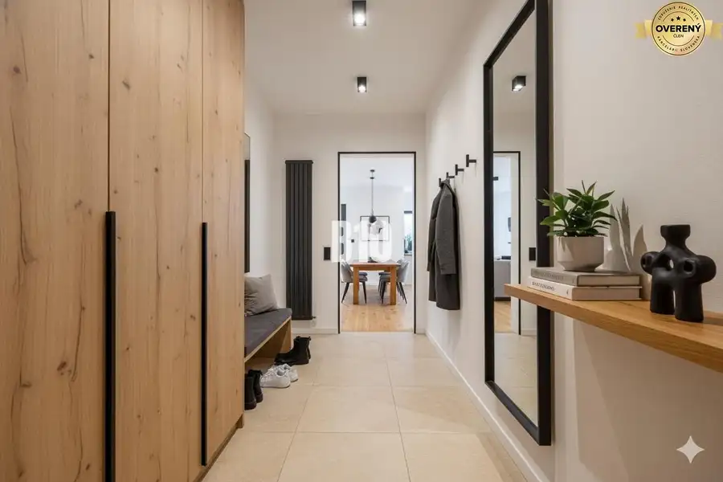
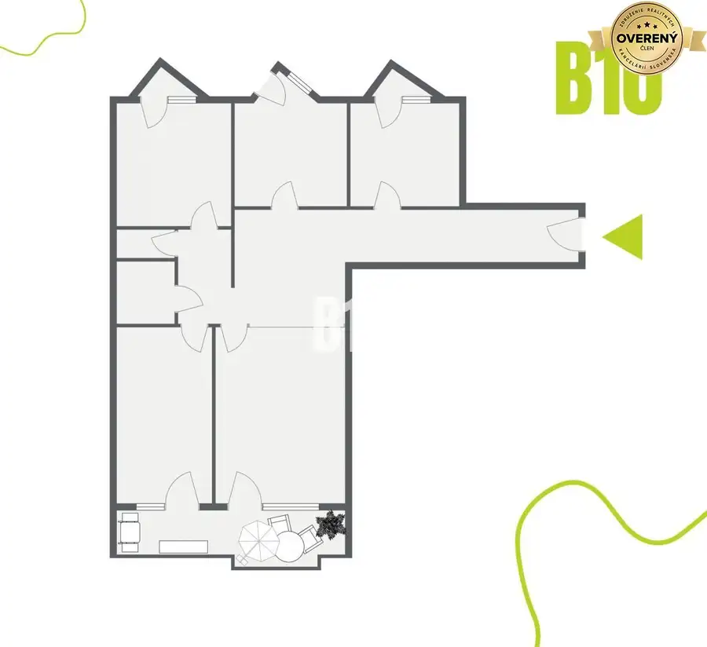
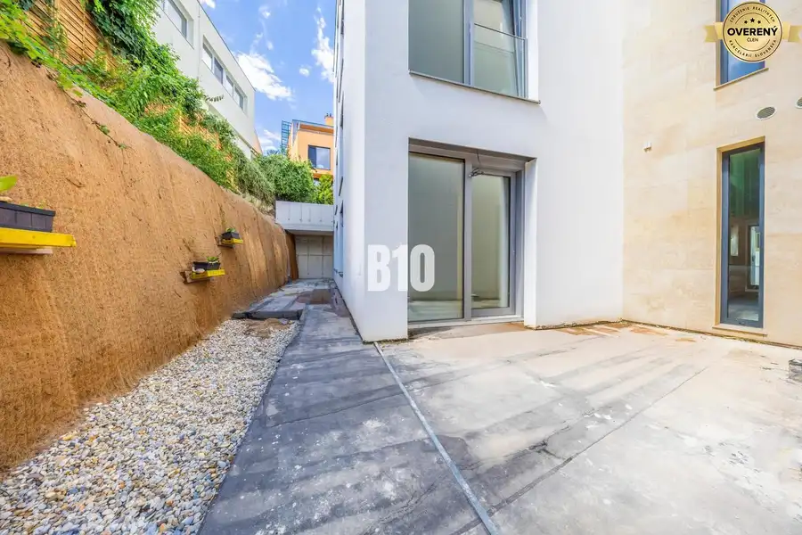
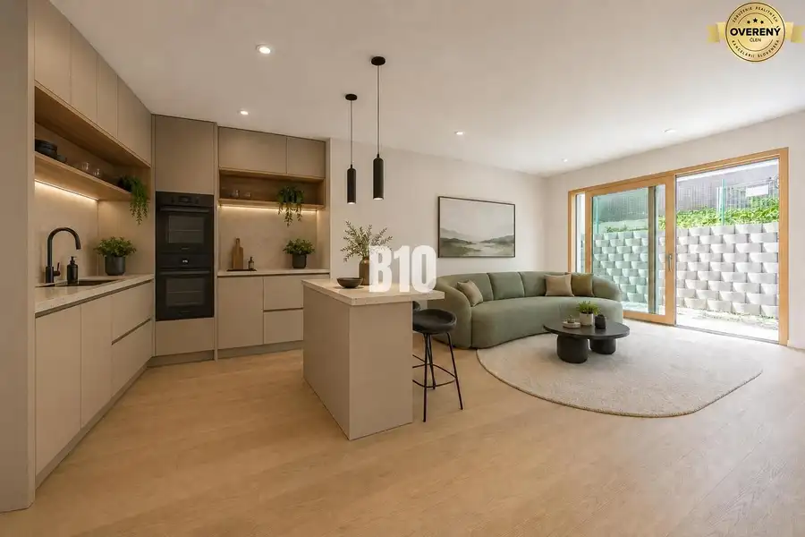
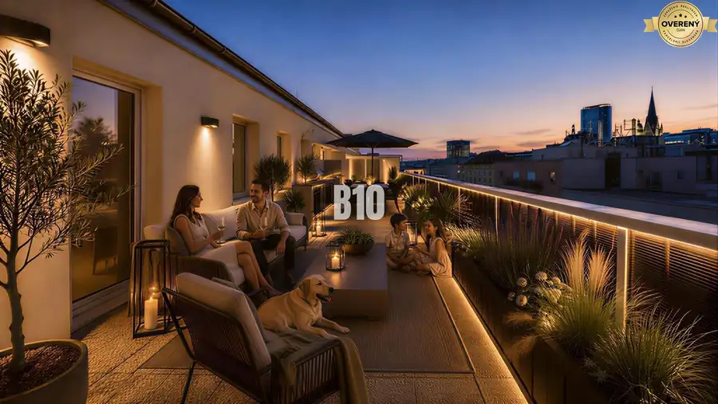

POTENCIÁL NA GRÖSSLINGOVEJ - 4IZBOVÝ BYT PODĽA VAŠICH PREDSTÁV
Staré Mesto





- Dispozícia4-izbový
- Plocha112 m²
- Stavpôvodný
- Vlastníctvoosobné
O nehnuteľnosti
B10 ponúka na predaj tento výnimočný 4 izbový byt v tehlovej stavbe z roku 1986 na Grösslingovej ulici v Starom meste. Nachádzame sa na 3.poschodí s novým výťahom.V ponuke nájdete pôdorys aktuálneho stavu ako aj vizualizácie bytu po rekonštrukcii, ktorú Vám vieme na mieru zrealizovať. Byt je v pôvodnom stave.Jednotlivé výmery:99,57m2 podlahová plocha bytu8,58m2 loggia do vnútrobloku1,02m2 x 2 balkóny1,80m2 pivnicaV prípade záujmu je možné dokúpiť si parkovacie miesto priamo v podzemnej garáži za 40.000€. Parkovanie je možné aj na ulici v rámci pravidiel parkovacej politiky.Fotografie reálneho stavu bytu Vám zašleme na vyžiadanie.ODPORÚČANIE MAKLÉRA: Ak hľadáte bývanie, ktoré spája atmosféru historického centra s moderným komfortom, predstavujeme vám atraktívny byt na Grösslingovej ulici.Nehnuteľnosť sa nachádza v obľúbenej lokalite širšieho centra, ktorá ponúka pokojné mestské prostredie, kompletnú občiansku vybavenosť v pešej dostupnosti a zároveň výborný investičný potenciál – či už na vlastné bývanie alebo na prenájom.Byt je vhodný na rekonštrukciu podľa individuálnych predstáv nového majiteľa.Dispozičné riešenie umožňuje viacero variantov – od zachovania oddelenej kuchyne až po vytvorenie moderného otvoreného denného priestoru. Vďaka tomu si môžete vytvoriť interiér presne podľa svojho štýlu a potrieb.Ide o nehnuteľnosť s charakterom a potenciálom, ktorú sa oplatí vidieť. Odporúčame osobnú obhliadku.V prípade záujmu o obhliadku alebo bližšie informácie nás neváhajte kontaktovať na tel.č. ID: 129816Cena: 459 900€ Aj váš dom, byt alebo pozemok predáme na počkanie #pocelomslovensku
Parametre
- Rozloha pozemku
- 1139 m²
- Zastavaná plocha
- 1139 m²
- Úžitková plocha
- 112 m²
- Vlastníctvo
- osobné
- Stav
- pôvodný
- Status
- aktívne
- Postavené z
- tehla
- Dátum zverejnenia
- 2026-07-10
Kde to je
Mohlo by Vás zaujímať

BytNové 399 000 €SKOLAUDOVANÉ | POD VINICAMI - POSLEDNÉ VOĽNÉ 3IZBOVÉ BYTY S PREDZÁHRAD Bratislava 3-izbový132 m²
BytNové 279 000 €SKOLAUDOVANÉ | POD VINICAMI - POSLEDNÝ VOĽNÝ 2IZBOVÝ APARTMÁN S PREDZÁ Bratislava 2-izbový53 m²
BytNové 599 900 €TAKMER 200m² NAD MESTOM - JEDINEČNÝ 4-IZBOVÝ BYT S VEĽKOLEPOU TERASOU Staré Mesto 4-izbový198 m²